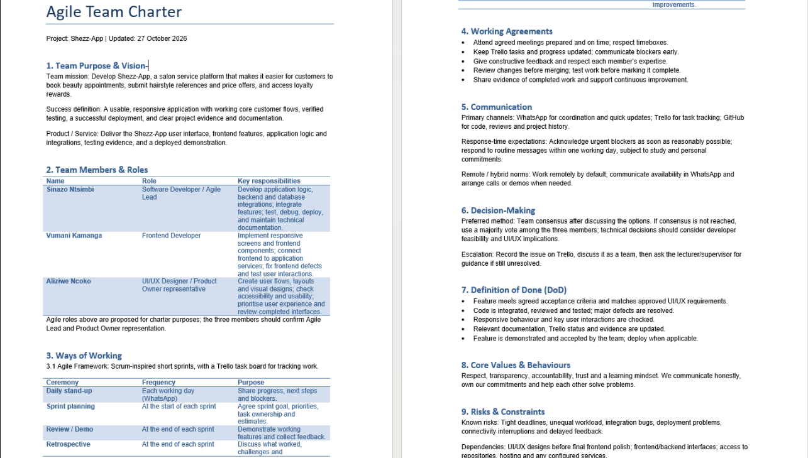
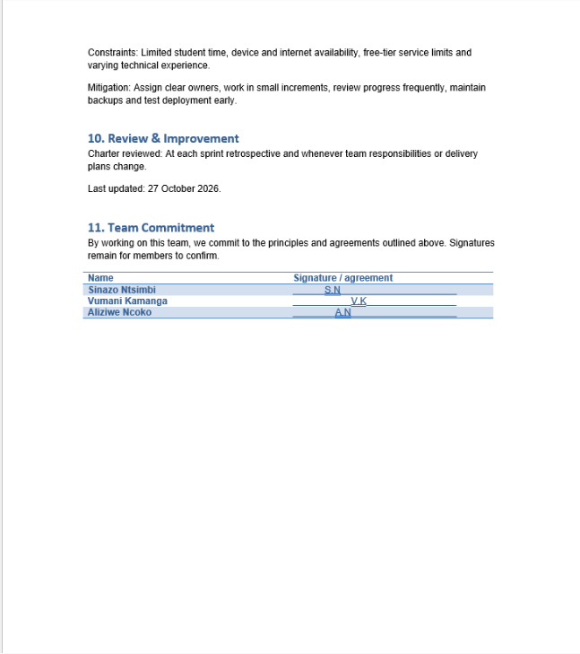
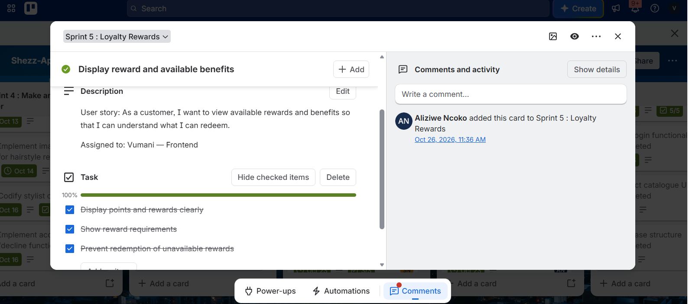
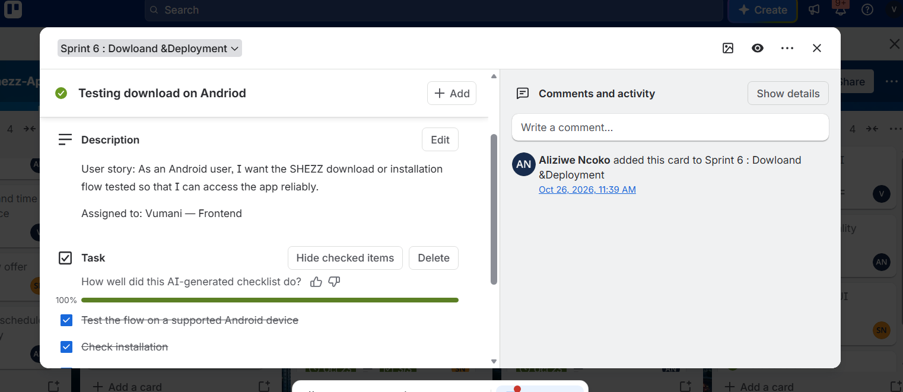
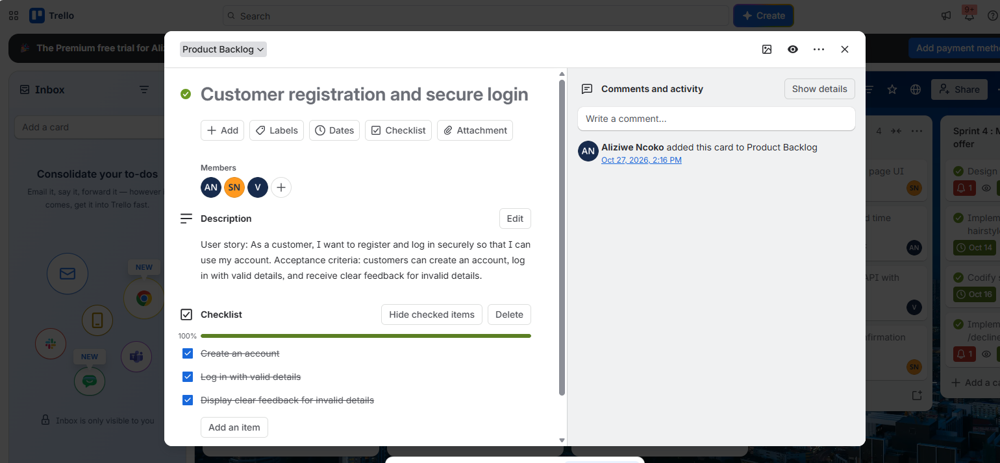
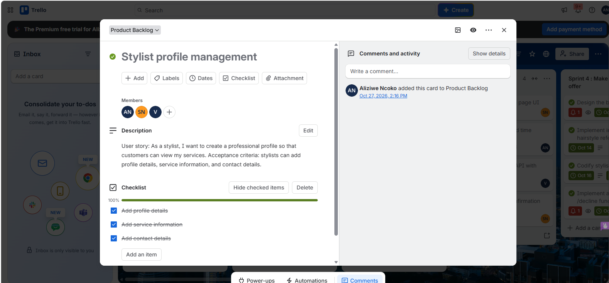
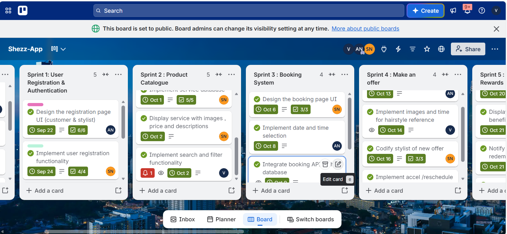

Shezz Beauty Studio
Beauty studio web application and the primary case study for my Agile project-management evidence.
Live application · Source codeDIGITAL PORTFOLIO · CPUT PROJECT PRESENTATION 3
Digital Associate at CAPACITI · ICT Application Development · Cape Town, South Africa
Interested in software development, data analytics and building user-focused digital solutions.
View Agile EvidenceGitHubI am a third-year ICT Application Development student at Cape Peninsula University of Technology and a Digital Associate at CAPACITI. My interests include software development, data analytics and problem-solving. This portfolio presents my technical projects, professional development, and evidence of applying Agile practices.
Java · Kotlin · SQL · HTML · CSS · JavaScript · Git · Android Studio · NetBeans · CRUD · MVC · Room
Diploma in ICT: Application Development
CPUT · In progress
National Senior Certificate
Phumulani Secondary School · 2019
Application Development student with experience building desktop and mobile applications, and a growing interest in data analytics. I enjoy developing practical, user-focused solutions and improving my technical and communication skills.
Digital Associate — CAPACITI (current)
Informal IT Support (part-time / volunteer): software installation, operating-system configuration, basic networking, printer setup and troubleshooting.
Situation: I was required to record a mock interview. Task: Present myself confidently. Action: I practiced interview questions and reviewed my recording. Result: I developed greater confidence and communication awareness.
Play the mock interview here on the portfolio.
Beauty studio web application and the primary case study for my Agile project-management evidence.
Live application · Source codeJava Swing desktop system for accommodation records, CRUD operations, database integration and MVC organization.
Kotlin application using Room for local persistence, registration, login and multi-screen navigation.
This section follows the five assessment categories. Each category contains separate evidence and reflection, supported by artifacts wherever available.
Open Trello Project BoardEvidence: Shezz-App Agile Team Charter, updated 27 October 2026. The charter documents our mission to deliver a salon booking platform with hairstyle references, price offers and loyalty rewards, alongside team responsibilities, communication, working agreements, decision-making and a Definition of Done.

Charter: purpose, team roles and ceremonies

Charter: working agreements, decisions and quality standards

Charter: review, risks and team commitments
Ways of working: Scrum-inspired short sprints with Trello task tracking, daily WhatsApp stand-ups, sprint planning, reviews and retrospectives. WhatsApp supports communication; GitHub records code and reviews. The team aims to review code, resolve major defects, update documentation and demonstrate features before marking them done.
Risks and constraints: time limits, connectivity, integration problems, deployment constraints and uneven workload. The charter recommends clear ownership, small increments, early blocker reporting and frequent review.
Situation: Our Shezz-App project involved frontend, backend and UI/UX work that needed to fit together. Task: As the frontend developer, I needed to understand my responsibilities and how to coordinate with the other team members. Action: The charter set out role boundaries, Trello tracking, WhatsApp updates, review expectations and a shared Definition of Done. Result: It gave me a clearer framework for coordinating frontend integration and raising blockers. I should support this reflection with a specific example from my own work before submitting.
Evidence: These completed Trello cards document user stories and task checklists from Sprint 5 and Sprint 6. Both cards show Vumani — Frontend as the assignee and their checklists at 100%.

Sprint 5 — Loyalty Rewards: view available rewards and benefits.

Sprint 6 — Download & Deployment: test the Android download and installation flow.
Sprint 5 user story: As a customer, I want to view available rewards and benefits so that I can understand what I can redeem. Its checked tasks cover clearly displaying points and rewards, showing reward requirements, and preventing redemption of unavailable rewards.
Sprint 6 user story: As an Android user, I want the SHEZZ download or installation flow tested so that I can access the app reliably. The card records testing on a supported Android device and checking installation.
Situation: The team planned customer-facing loyalty information and reliable Android access across separate sprints. Task: As the frontend assignee, I needed to deliver clear reward information and support testing the download and installation flow. Action: The Trello cards broke the stories into acceptance tasks and tracked completion. Result: The cards show both checklists completed and make the expected outcomes visible.
Evidence: These Trello Product Backlog cards capture two user stories with acceptance criteria and completed checklists. Both cards were added to the Product Backlog on 27 October 2026.

Customer registration and secure login

Stylist profile management
Customer registration and secure login: As a customer, I want to register and log in securely so that I can use my account. Acceptance criteria cover account creation, logging in with valid details, and clear feedback for invalid details.
Stylist profile management: As a stylist, I want to create a professional profile so that customers can view my services. Acceptance criteria cover adding profile details, service information, and contact details.
Both cards show completed checklists, making the acceptance criteria and backlog items visible for review.
Situation: The application involved multiple features competing for development time. Task: Understand how to organize and prioritize requirements. Action: I reviewed how the Trello workflow separates work into manageable items. Result: I learned that a product backlog should make priorities and outstanding work visible; I will add concrete examples once the backlog evidence is verified.
Evidence: The Trello board screenshot shows sprint columns for user registration, product catalogue, booking system, offers and loyalty rewards. Visible cards include task owners, due dates and checklist progress.

Sprint backlog board: planned work, deadlines, assigned owners and checklist status.
Situation: Development work needed to be planned in short delivery periods. Task: Track a specific feature and its deadline. Action: The team used Trello sprint cards with user stories, due dates and status indicators. Result: I learned how a sprint backlog helps make delivery progress and responsibilities visible.
Evidence: A draft logbook for 12–16 October 2026 follows the supplied taskboard, walkthrough and daily stand-up format. It is aligned with the Sprint 2 Trello plan, including frontend booking-flow work (F5).
View Agile Logbook (PDF) Download PDF · Download editable Word draft
What the evidence shows: A taskboard, walkthrough notes, and daily stand-up records for 12–16 October 2026. The entries address booking flow, cancellation and rescheduling, hairstyle reference selection, booking statuses and notification planning. The walkthrough also identifies the challenge of finding an API without monthly fees.
Situation: During the Shezz-App sprint from 12–16 October 2026, the team needed to coordinate booking features across frontend, backend and design work. Task: As the frontend developer, my responsibility was to track the booking-flow interface and communicate progress, next steps and dependencies. Action: I structured the logbook around three daily stand-up questions and recorded planned work on service, date and time-slot selection, booking confirmation and integration. I also identified dependencies on the booking API and designs, and noted the cost of API services as a possible obstacle. Result: The logbook helped me see how documenting work and blockers can support team coordination. I still need to confirm the entries against my actual work before treating them as a verified record of achievements.
Situation: I needed to structure my CV in Markdown. Task: Create a clear, professional document. Action: I applied headings, lists and consistent formatting. Result: I improved my documentation and presentation skills.
Situation: My portfolio needed to be accessible online. Task: Publish it using GitHub Pages. Action: I organized repository files, configured deployment and tested the website. Result: I gained experience with web publishing and troubleshooting.
Cape Town, South Africa · 222865369@mycput.ac.za · 065 546 4135